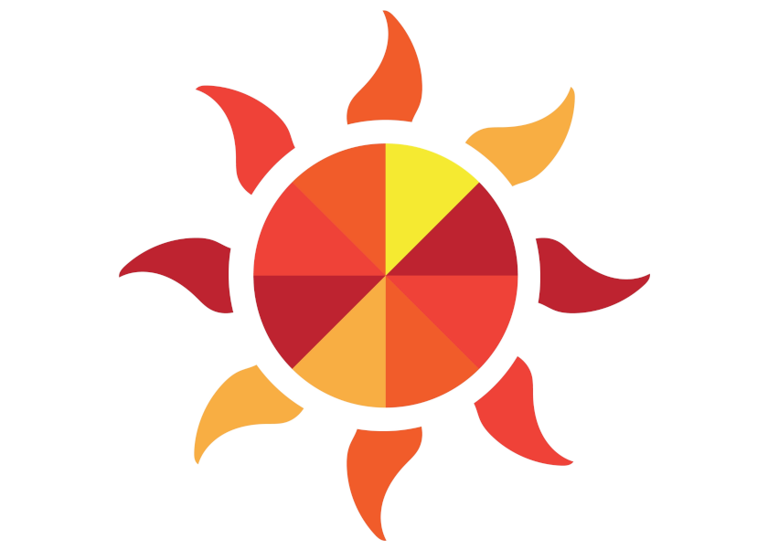

Это единая централизованная религия всего Осколка. Большинство жителей поклоняются Великому Солнцу, которое позволило миру, поражённому Катаклизмом, не умереть окончательно, а жить в надежде на то, что все осколки когда-нибудь вновь соединяться. Говорят, что перед этим Осколку будут три знамения:
Некоторые считают, что появление Тех, кто знают предвещает первое знамение, но им вторят, что у эльфов испокон веков свои собственные боги, а демоны вторгаться и не начинали. Кроме того, культов должны быть многие десятки, а Те, кто знают — это лишь один культ. Другие же и вовсе считают и историю о древнем едином мире выдумкой, а всю доктрину Церкви о знамениях — чушью.
В последнее время на улицах городов всё чаще и чаще видны проповедники в фиолетовых мантиях, вещающие о приходе Того, кто видит. «Он придёт, и падут ниц старые боги, и воссоединится Осколок с мирами другими, и будет всем благодать.»
И правительства городов, и Великое Солнце поначалу пытались бороться с ними, публично осуждая, бросая в тюрьму, казня, но их становилось всё больше и больше, и со временем люди разделились на тех, кто стал верить им, и тех, кто смирился и перестал замечать назойливых пророков, тем более что с момента появления Тех, кто знают, как они себя называют, прошло уже лет 5, а никакого Того, кто видит, так и не пришло.
Но тем не менее эта странная секта нашла свою аудиторию, и теперь даже некоторые аристократы носят на шее медальон с глазом в треугольнике — священным символом Того, кто видит.
Торговая компания Мартин и Сыновья располагается в Золотом квартале города Оксламонд и владеет пятой частью городского торгового флота.
Мартин Кинг — основатель компании, живший примерно 100 лет назад, разбогател на торговле редкими сплавами железа, которые он возил из королевства Врано. Его сыновья, а затем сыновья старшего из его сыновей, продолжили дело деда. Сейчас компанией управляют Нестор Кинг и Воло Кинг, одни из самых влиятельных людей в городе.
Воровская гильдия Оксламонда, управляемая тремя ворами, скрывающими свою личность. Имеет огромное влияние в Нижнем городе и раньше заправляла портом, пока около 10 лет назад не была вытеснена оттуда правительственными силами. Но даже лишившись жирных сборов со всех входящих в город кораблей, Триумвират не сильно обеднел, ибо дань ему платят все, кто ведёт какой-либо бизнес в Нижнем городе, портовые сборы по сравнению с "налогами" оттуда — капля в море. Но ходят слухи, что Триумвират хочет восстановить контроль над портом чисто из репутационных соображений.